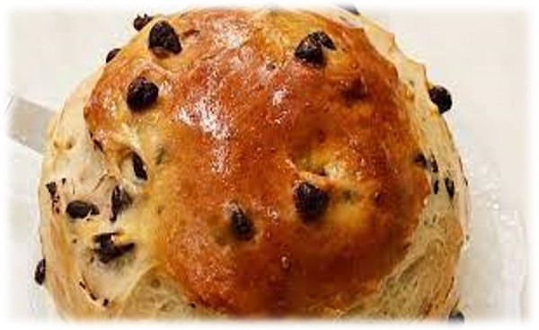

La cremique
"La crème" est un ingrédient essentiel dans de nombreuses recettes françaises, y compris dans la préparation de la blanquette de veau. Cette crème est généralement ajoutée à la sauce pour lui donner une texture onctueuse et une saveur riche. En cuisine, la crème fraîche est souvent utilisée, mais il existe également d'autres types de crème, tels que la crème épaisse ou la crème légère, qui peuvent être utilisés en fonction des préférences personnelles et des recettes spécifiques. La crème est appréciée pour sa capacité à adoucir les saveurs et à ajouter de la richesse aux plats, ce qui en fait un ingrédient polyvalent dans la cuisine française.
La crème est un ingrédient largement utilisé dans la cuisine française et est souvent associée à différentes régions du pays. Cependant, une région réputée pour sa production de crème est la Normandie, située dans le nord-ouest de la France. La Normandie est célèbre pour ses vastes pâturages verdoyants où les vaches paissent, produisant ainsi du lait de haute qualité, ingrédient de base de la crème. La crème normande est renommée pour sa texture riche et crémeuse, ainsi que pour sa saveur délicate. Elle est utilisée dans de nombreux plats traditionnels normands, tels que la tarte aux pommes, la sauce au cidre et bien sûr, la blanquette de veau. La crème normande ajoute une touche de douceur et de velouté aux plats, ce qui en fait un élément essentiel de la cuisine régionale.
Ingrédients :
- 800 g de viande de veau (épaule ou poitrine), coupée en morceaux
- 2 carottes, coupées en rondelles
- 1 oignon, coupé en dés
- 200 g de champignons de Paris, coupés en quartiers
- 2 branches de céleri, coupées en dés
- 2 gousses d'ail, émincées
- 2 cuillères à soupe de farine
- 30 g de beurre
- 500 ml de bouillon de veau
- 250 ml de vin blanc sec
- 250 ml de crème fraîche
- 1 bouquet garni (thym, laurier, persil)
- Sel et poivre noir moulu
- Jus de citron (facultatif)
- Persil frais haché pour garnir (facultatif)
Instructions :
- Faire chauffer le beurre dans une grande cocotte à feu moyen. Ajouter la viande de veau et faire revenir jusqu'à ce qu'elle soit dorée de tous les côtés.
- Ajouter les oignons et l'ail dans la cocotte et faire revenir pendant quelques minutes jusqu'à ce qu'ils soient dorés.
- Saupoudrer de farine sur la viande et les légumes, puis mélanger pour bien enrober.
- Verser le vin blanc et le bouillon de veau dans la cocotte. Ajouter les carottes, les champignons, le céleri et le bouquet garni. Assaisonner avec du sel et du poivre.
- Porter à ébullition, puis réduire le feu et laisser mijoter à feu doux pendant environ 1 heure 30 minutes, en remuant de temps en temps, jusqu'à ce que la viande soit tendre.
- Une fois la viande tendre, retirer le bouquet garni de la cocotte. Ajouter la crème fraîche et mélanger jusqu'à ce que la sauce soit bien crémeuse. Goûter et ajuster l'assaisonnement selon vos préférences. Si la sauce est trop acide, vous pouvez ajouter un peu de jus de citron pour l'adoucir.
- Servir la blanquette de veau chaudement, garnie de persil frais haché si désiré. Accompagner de riz, de pommes de terre ou de pâtes fraîches.